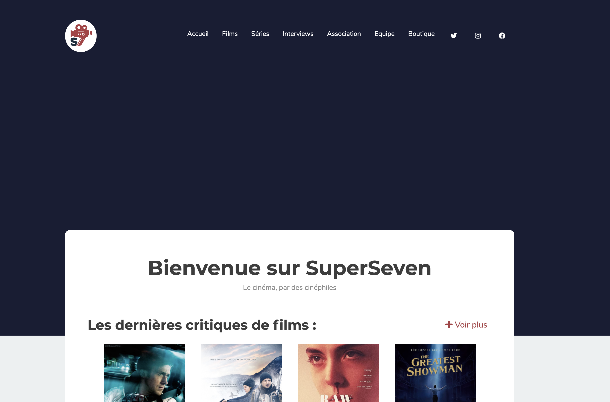
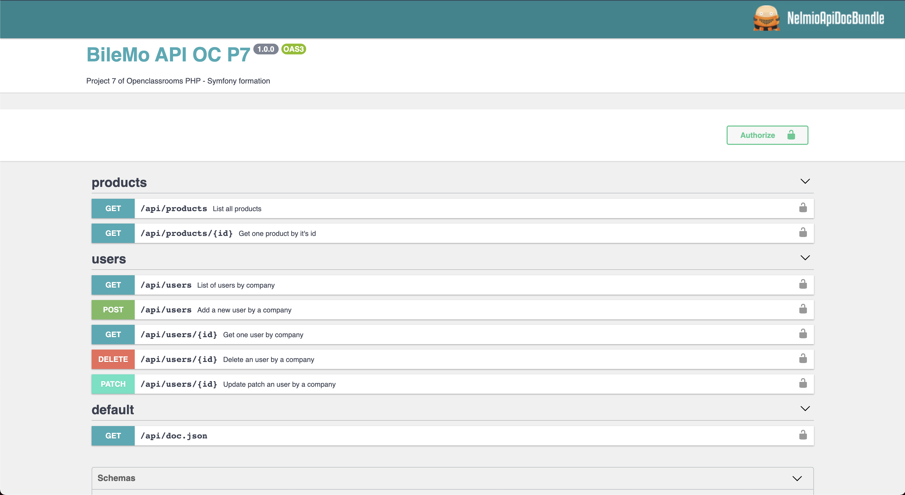
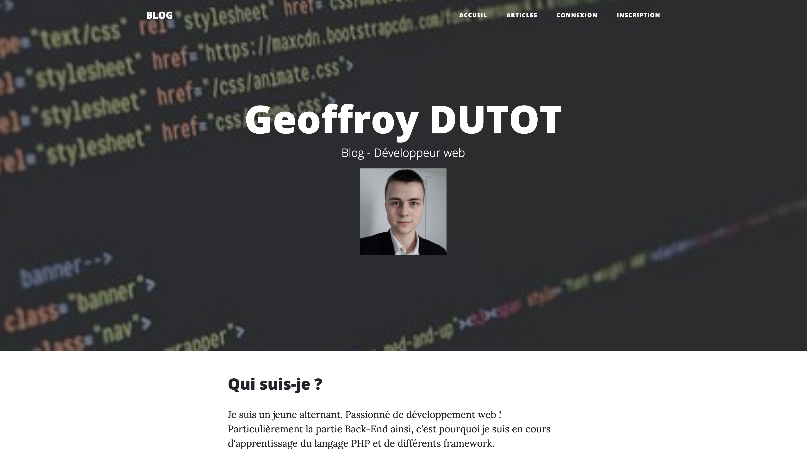
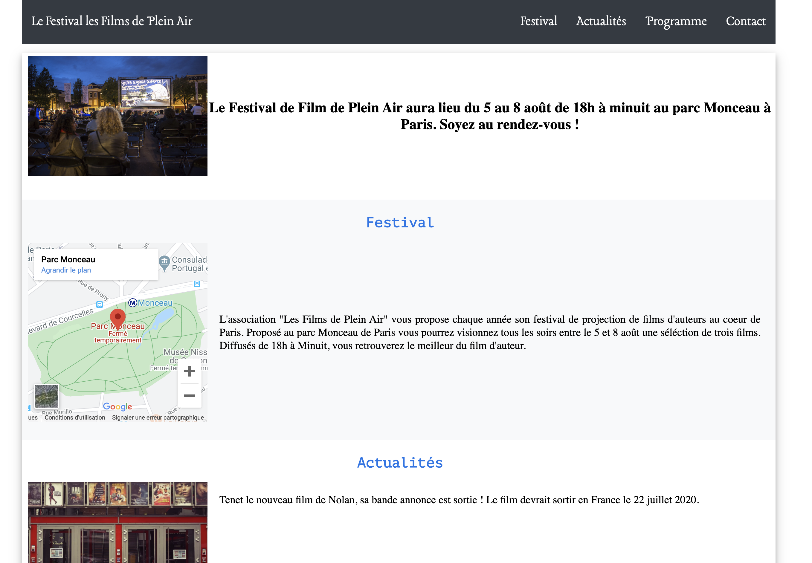

Mes projets

Développement Back-End du site SuperSeven.fr. Site de l'association de cinéphiles - Super Seven. L'association y diffuse divers contenus, critiques de films ou de séries et des interviews.
- Symfony 4.4
- HTML
- CSS

Développement Back-End. Projet n°7 du parcours développeur PHP - Symfony de Openclassrooms. Création d'une API REST proposant un catalogue de smartphones en B2B.
- Symfony 5
- JWT
- Nelmio API Doc

Développement web. Projet n°6 du parcours développeur PHP - Symfony de Openclassrooms. Création d'un site communautaire de fans de snowboard avec le framework Symfony.
- Symfony 5
- Tailwindcss

Développement web. Projet n°5 du parcours développeur PHP - Symfony de Openclassrooms. Création d'un blog professionnel en PHP.
- PHP

Développement Front-End. Projet réalisé dans le cadre de la formation Développeur PHP - Symfony de OpenClassrooms. Une association fictive souhaite posséder un site afin de communiquer sur son festival de films en plein air. Une proposition détaillée contenant cahier des charges, wireframes, devis et une maquette en HTML et CSS était demandée. Ceci étant la maquette en résultant.
- HTML
- CSS

Développement web. Projet réalisé dans le cadre de la formation Développeur PHP - Symfony de OpenClassrooms. Agence immobilière fictive demande la création de son site web afin de présenter ses différents chalets à louer ou à acheter. Ce site en donc la solution proposée à ce projet.
- WORDPRESS